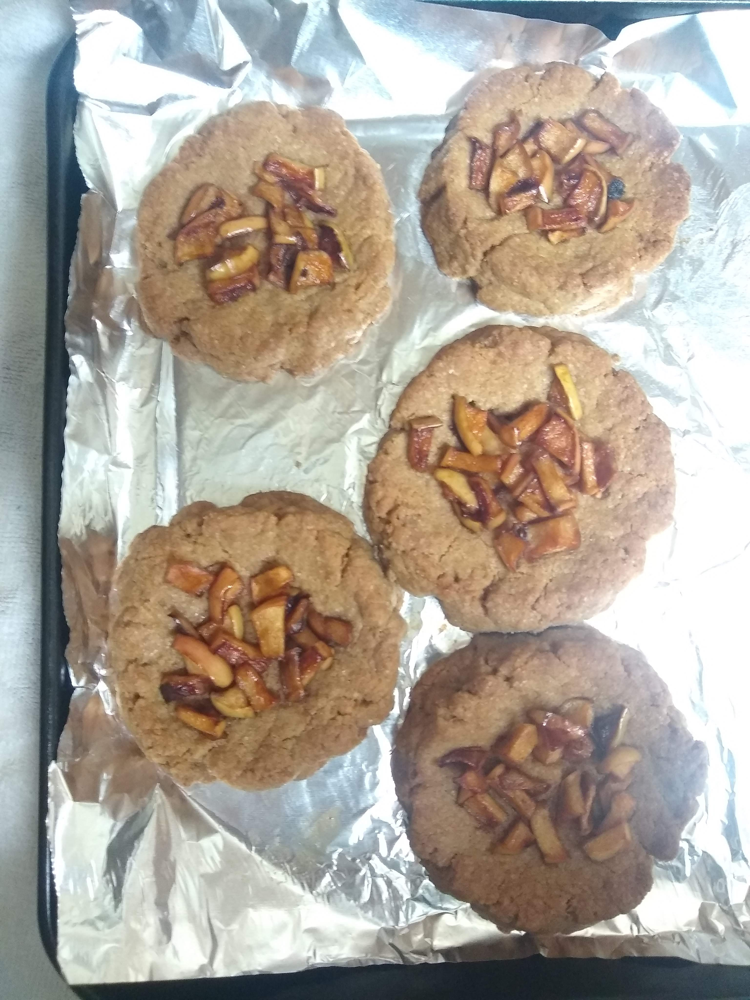

Cookie Base
Oven: 350f
Bake: 20 min
Steps
- Chop 1 small gala apple
- Pan fry in butter, honey, and cinnamon until golden brown
- Melt butter for cookie base in frying pan
- Move pan off heat, make sure it's cool enough to touch
- Add the rest of cookie base ingredients, in that order
- Mix with spoon, then finish mixing with hands
- Form into balls and put on baking sheet with a bit of space between
- Press down on each ball and form into cups
- Put chopped apples in center
- Bake and enjoy!
Ingredients For Cookie Filling
- 1 small gala apple
- Dash cinnamon
- Spoonful of honey
Ingredients For Cookie Base
- 1/2 cup (1 stick) unsalted butter
- 1/2 cup brown sugar
- 1 tsp vanilla extract
- 1 1/4 cups all-purpose flour
- 1 egg
- 1/2 tsp baking soda
- 1/2 tsp ground cinnamon
- 1/4 tsp salt